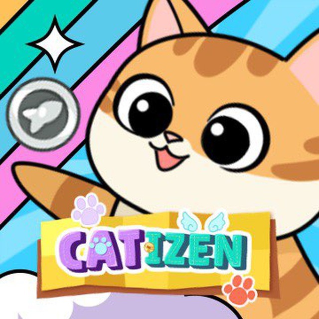

Catizen

Catizen — это игра в Telegram, в которую проинвестировал TON Foundation. В игре
представлен дом организации, которая занимается содержанием котиков и даёт возможность
прихожанам поласкать их. За это прихожане платят монетки, за которые можно покупать
котиков для скрещивания. Игровой процесс максимально простой и может вызывать
привыкание. Необходимо скрещивать котиков одинакового уровня и получать котика более
высокого уровня и так далее. В игру инвестировали Web3 Ventures, Mask Network, Y2Z,
SecondLive, EMURGO Ventures, Moon Capital, Initiate Capita, а в партнёрах находится
компания Xiaomi.
Проект Catizen активно набирает обороты и не планирует их сбавлять. Проект привлёк
комьюнити своей забавной игровой механикой и идеей, где нужно прокачивать котеек.
Что делать: Скрещивать и разводить кошек. Игроки скрещивают кошек и получают
виртуальную валюту, которую можно обменять на будущие токены $CATI.
Прокачивай котиков, зарабатывай $WCATI. Дроп планируется на конец июня.
Успевай прокачать, переходи в бота!
бот1 TON
бот2 MNT